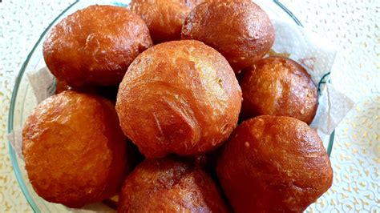

Fat cakes/Amagwinya
Fat cakes/Amagwinya is my favourite South Africa dish.
It is best served with milky tea or coffee, especially on a cold day.
Ingredients
- 2 cups (500 ml)Self-raising flour
- 1 tablespoon sugar
- 1/2 t (2 ml) salt
- 2 eggs
- Enough oil for deep frying
- 1 cup (250 ml) milk/ Water
Instructions
- Sift flour, baking powder and salt together
- Whisk egg, milk and sugar
- Make a well in the dry ingredients, add milk and egg mixture and mix to very soft dough. You could add more milk if necessary.
- Heat the oil to between 180 C and 190C.
- Ladle level spoonfuls of batter into the hot oil (12 cm deep)
- and bake until brown on both sides, before removing from oil.
- Use towel paper to absorb the excess oil